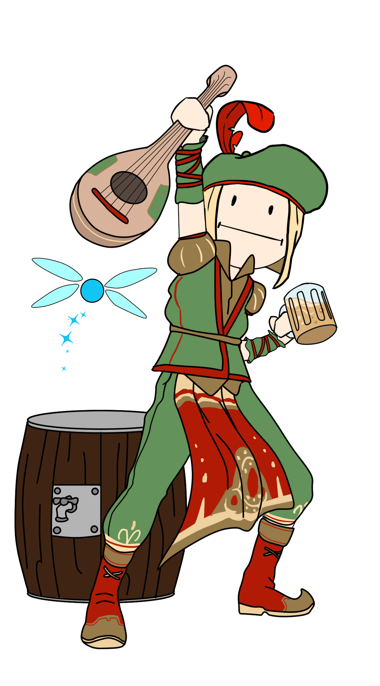

10 pts restantes

Explorador
?Se explorar novos locais, encarar novos mundos e ver o mundo inteiro por um novo ângulo é a sua motivação para jogar, você é um EXPLORADOR.
Os Exploradores não se importam tanto com a vitória ou com a derrota quanto alguns de seus companheiros, e a presença ou ausência de outros jogadores não os afeta de maneira nenhuma.
Seu objetivo é voltado unicamente para o mundo que os cerca, e eles vivem para desbravar cada um de seus muitos mistérios.
Os Exploradores não se importam tanto com a vitória ou com a derrota quanto alguns de seus companheiros, e a presença ou ausência de outros jogadores não os afeta de maneira nenhuma.
Seu objetivo é voltado unicamente para o mundo que os cerca, e eles vivem para desbravar cada um de seus muitos mistérios.

Conquistador
?Se conquistar a vitória, acima de qualquer coisa e acima de qualquer um, é o seu objetivo único e final, então você é um CONQUISTADOR.
Os Conquistadores tem sua mente voltada sempre para a linha de chegada. Eles interagem com os outros jogadores e com o mundo de maneira diferenciada, sempre focados e sempre objetivando aquilo que os colocará mais próximos do topo do pódio.
Nada fica no caminho de sua conquista!
Os Conquistadores tem sua mente voltada sempre para a linha de chegada. Eles interagem com os outros jogadores e com o mundo de maneira diferenciada, sempre focados e sempre objetivando aquilo que os colocará mais próximos do topo do pódio.
Nada fica no caminho de sua conquista!
Assassinos
?Se a vitória importa menos para você do que a possibilidade de colocar seus oponentes (e aliados!) na palma da sua mão, então com certeza você é um ASSASSINO.
O objetivo do Assassino é ter a certeza de que o seu oponente não apenas vai ser derrotado, mas que ele vai ser derrotado do jeito que o Assassino quer.
Ele quer ter o controle, seja para o bem, seja para o mal, e fará o necessário para garantir que consiga!
O objetivo do Assassino é ter a certeza de que o seu oponente não apenas vai ser derrotado, mas que ele vai ser derrotado do jeito que o Assassino quer.
Ele quer ter o controle, seja para o bem, seja para o mal, e fará o necessário para garantir que consiga!
Socializador
?Se a oportunidade de fazer novos amigos e interagir com os outros jogadores vale muito mais para você do que a vitória no jogo, então você é um SOCIALIZADOR.
Os socializadores dão um valor muito maior para a possibilidade de interação com outros jogadores, e deixam o mundo do jogo em si como um segundo plano, às vezes nem dando a devida atenção à sua construção.
Para eles, o que mais importa é que depois que a caixa do jogo esteja fechada, ou o jogo esteja desligado, a diversão ainda continue!
Os socializadores dão um valor muito maior para a possibilidade de interação com outros jogadores, e deixam o mundo do jogo em si como um segundo plano, às vezes nem dando a devida atenção à sua construção.
Para eles, o que mais importa é que depois que a caixa do jogo esteja fechada, ou o jogo esteja desligado, a diversão ainda continue!
0
0
0
0